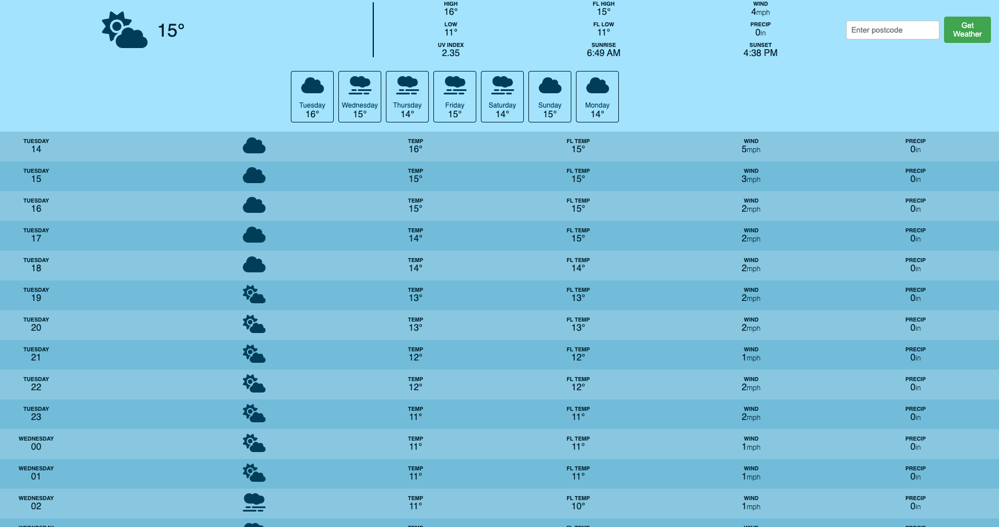

Weather App

This weather application, based on a Traversy Media tutorial, provides current conditions, 7-day and 24-hour forecasts based on the user's location or postcode. Built with HTML, CSS, and JavaScript, it utilizes external APIs to fetch and display weather data dynamically. I extended the original tutorial by adding features such as UV index, sunrise and sunset times, and postcode search functionality, adding an additional API.
Deployed Site
GitHub Link